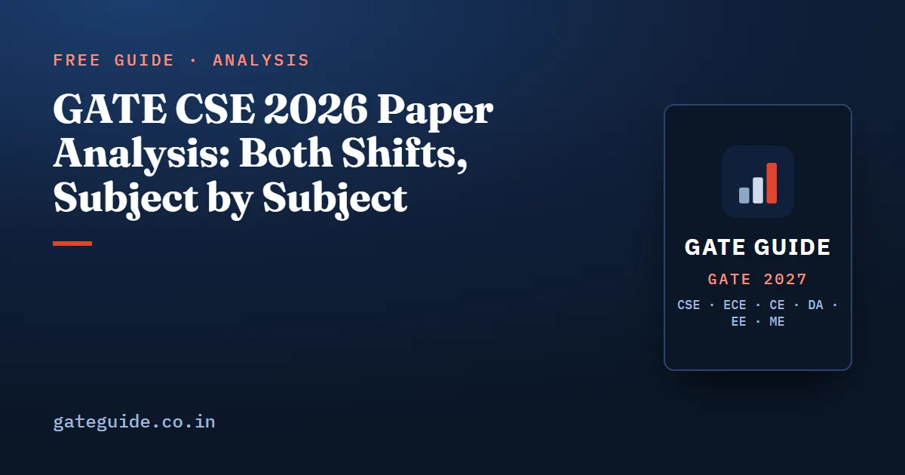

GATE CSE 2026 Paper Analysis: Both Shifts, Subject by Subject

The GATE CSE 2026 paper was held in two shifts, and analysts rated both moderate to difficult: lengthy, conceptual and slightly tricky. Shift 1 leaned on Algorithms, COA and Programming, while shift 2 had the most questions in Programming and Engineering Mathematics. This guide reads both shifts subject by subject from the analyst compilations in the book, labels every figure as approximate, and explains what the paper signals for 2027.
In this guide
Key takeaways
- GATE 2026 was organised by IIT Guwahati and ran in two CS shifts. GATE 2027 is organised by IIT Madras.
- For shift 1, analysts give marks; for shift 2, only question counts. Neither table is official, and both are incomplete.
- Shift 1's largest core subjects were Algorithms (10), COA (9) and Programming and Data Structures (9).
- Shift 2 had about 19 NAT and 11 MSQ questions by one count, so much of the paper carried no negative marking.
- The difficulty came from length and unfamiliar framing, continuing a trend analysts describe since 2021.
How to read these numbers
GATE does not publish subject-wise marks for CS. Every figure below comes from third-party analyst compilations, which sort each question into a subject after the exam. Analysts disagree by two or three marks on borderline questions, such as whether a recurrence belongs to Discrete Mathematics or Algorithms. So read each number as approximate.
There is a second limit. The shift 1 table in the book accounts for 88 of the 100 marks, and the shift 2 counts cover 64 of the 65 questions. Some questions were simply not classified in those compilations. Do not add the rows and expect 100.
Remember: analyst weightage is a reconstruction, not an official count. Use it to see the shape of a paper, not to plan to the mark.
Shift 1, subject by subject
The book's shift 1 table gives the number of 1-mark and 2-mark questions per subject, and the resulting marks.
| Subject | 1-mark | 2-mark | Marks |
|---|---|---|---|
| General Aptitude | 5 | 5 | 15 |
| Algorithms | 2 | 4 | 10 |
| COA | 3 | 3 | 9 |
| Programming and Data Structures | 3 | 3 | 9 |
| Databases | 3 | 2 | 7 |
| Theory of Computation | 1 | 3 | 7 |
| Operating System | 2 | 2 | 6 |
| Computer Networks | 2 | 2 | 6 |
| Discrete Mathematics | 1 | 2 | 5 |
| Digital Logic | 1 | 2 | 5 |
| Compiler Design | 1 | 2 | 5 |
| Engineering Mathematics | 4 | 0 | 4 |
Three things stand out. Algorithms carried four 2-mark questions, the most of any core subject. Engineering Mathematics, meaning linear algebra, calculus and probability, appeared only as 1-mark questions. Theory of Computation had three 2-mark questions out of four, so its marks were concentrated in longer items.
Shift 2, subject by subject
For shift 2, the compilations give question counts only, not marks.
| Subject | Questions |
|---|---|
| General Aptitude | 10 |
| Programming and Data Structures | 8 |
| Engineering Mathematics | 7 |
| COA | 6 |
| Computer Networks | 6 |
| Operating System | 5 |
| Databases | 4 |
| Compiler Design | 4 |
| Digital Logic | 4 |
| Algorithms | 4 |
| Theory of Computation | 3 |
| Discrete Mathematics | 3 |
The contrast with shift 1 is the lesson. Algorithms had 4 questions here but 6 in shift 1. Engineering Mathematics had 7 here but 4 in shift 1. Two shifts of the same exam can tilt differently, which is why one shift is weak evidence for any single subject.
Trap: reading one shift's table as "the 2026 weightage" overstates its certainty. The two shifts differ by several questions in more than one subject.
Question types: how much carried no negative marking
GATE CS uses three types: MCQ (one correct option of four), MSQ (one or more correct, no partial credit) and NAT (a typed numeric answer). Only MCQs carry negative marking. For shift 2, one analyst count reports:
| Type | 1-mark | 2-mark | Total |
|---|---|---|---|
| MCQ | 17 | 17 | 34 |
| MSQ | 5 | 6 | 11 |
| NAT | 6 | 13 | 19 |
These add to 64 questions, one short of 65, so they are approximate. Even so, 30 of the 64 counted questions were MSQ or NAT, with no penalty for a wrong answer. For shift 1, analysts said roughly 30 to 40 percent of the marks came from NAT and MSQ.
The book's long-run figures put this in context. From 2021 to 2026, MCQs were about half the paper, NATs about a quarter to a third, and MSQs about a fifth. The 2026 shifts sit inside that range. For how to attempt each type, see the MCQ, MSQ and NAT guide.
Difficulty and the topics analysts noted
Analysts rated both shifts moderate to difficult, and harder than 2025. Their recurring words were "lengthy", "conceptual" and "slightly tricky", and shift 2 was called calculation-intensive. These are opinions from compilations, not official ratings.
The topics they reported across both shifts were mostly familiar templates with a twist:
- Algorithms: dynamic programming with a non-standard recurrence; graph algorithms with modified conditions.
- COA: pipeline and cache questions; a floating-point representation question in shift 2.
- Operating System: multilevel queue scheduling, Banker's algorithm, multi-level paging with a TLB, inode-based file access.
- Computer Networks: subnetting and CIDR, TCP congestion phases, sliding-window efficiency, DNS resolution, CRC; a TCP connection question in shift 2.
- Compiler Design and TOC: LL(1) parsing and context-free grammar questions.
- Digital Logic: Boolean algebra weighted higher than expected in shift 2.
In one line: 2026 asked standard concepts in non-standard settings, and it asked them at length.
What 2026 signals for 2027
This section is analysis, not prediction. The book traces a slow rise in reasoning depth since 2021: familiar concepts placed in unfamiliar settings, and two concepts combined in one question. The 2026 descriptions fit that trend. Three practical readings follow.
- Practise under time. A lengthy paper punishes slow reading more than gaps in knowledge. The exam-day time management guide covers pacing.
- Practise variations, not answers. Change one condition in a standard problem and re-solve it. That is the skill a "twisted" question tests.
- Use the 2027 syllabus, not the 2026 one. The 2027 text changed in Computer Networks, COA and Digital Logic. Some 2026 topics, such as DNS and TCP, remain; others from older papers have been removed.
For the long series of subject marks, see the subject-wise weightage guide, and for using past papers well, the previous year papers analysis guide. The GATE CSE 2027 book carries the full 2009 to 2026 weightage table and maps each topic's 2026 appearance into its predictions.
Quick revision
- GATE 2026 was organised by IIT Guwahati; GATE 2027 by IIT Madras.
- All subject figures are analyst reconstructions, approximate and incomplete.
- Shift 1 leaders: Algorithms 10, COA 9, Programming 9 marks.
- Shift 2 leaders by count: Programming 8, Engineering Mathematics 7 questions.
- Shift 2: about 34 MCQ, 11 MSQ and 19 NAT by one count.
- Both shifts were rated moderate to difficult, lengthy and conceptual.
- Prepare for length and variation, using the 2027 syllabus.
Frequently asked questions
How difficult was the GATE CSE 2026 paper?
Analysts rated both 2026 shifts moderate to difficult, and harder than 2025. They described the paper as lengthy, conceptual and slightly tricky, and one compilation called shift 2 calculation-intensive. These are third-party opinions, not official ratings. The common thread is that familiar concepts were asked in less familiar settings, which costs time more than knowledge.
Which subject had the most marks in GATE CSE 2026 shift 1?
In the analyst marks table for shift 1, Algorithms had the most core-subject marks at 10, followed by COA and Programming and Data Structures at 9 each. General Aptitude carried its fixed 15. The table is approximate, since analysts classify borderline questions differently, and it accounts for 88 of the 100 marks rather than all of them.
How many NAT questions were in GATE CSE 2026?
For shift 2, one analyst count reports about 34 MCQ, 11 MSQ and 19 NAT questions, which adds to 64 rather than 65, so treat it as approximate. Combined with MSQ, that is a large share of questions without negative marking. Shift 1 was described as having more marks from MSQ and NAT than in a typical earlier paper.
Who organised GATE 2026?
GATE 2026 was organised by IIT Guwahati, according to the book's year-by-year record. GATE 2027 is organised by IIT Madras, which also organised the exam in 2003, 2011 and 2019. The organising institute changes every year, and the question-setting committee is drawn from several institutes, so one year's organiser explains little about topic choice.
What does the 2026 paper mean for GATE CSE 2027 preparation?
It suggests practising for length and unfamiliar framing, not only for formulas. Questions combined two concepts and twisted standard setups. This is an analysis of one year plus the trend since 2021, not a prediction that 2027 will look the same. The 2027 syllabus also changed in Computer Networks, COA and Digital Logic, so check the official syllabus.
Sources
- GATE 2027 official website (IIT Madras)
- GeeksforGeeks GATE CSE 2026 shift 1 analysis
- GeeksforGeeks GATE CSE 2026 shift 2 analysis
- PW GATE CSE 2026 shift 2 analysis
Dates, fees and the syllabus are set by the GATE 2027 organising institute and can change. Always confirm at gate2027.iitm.ac.in.